The browser patch from the first report is now a real diff, built for production and measured in headless Chrome and in the iOS 26.2 Simulator. The measurements overturn the first report's framing recommendation. They also refute three of its claims (see the corrections at the end of this section).
Journey compact, not the crop. Compact is closer to desktop proportions, keeps departure whole, and needs no pan track. Crop failed its own sweep: the boat left the frame 22 times and every example was clipped.lvh measurement, portrait overlay rules, an example slot (compact currently hides the examples), links after the scene, and an accessible story transcript.Commit tested: e267916, with a clean working tree. I built an untouched git archive copy in a scratch directory. Its index.html (497,658 bytes, 13 scene markers) matched the repository's out/, so the first report's browser tests used this commit.
Prototype: prototype.patch (438 lines, 5 files), applied to a second copy. next build (static export) and tsc --noEmit both passed. The patch also removes a few explanatory comments from Journey.tsx. That was a side effect of prototyping, not an intended change.
| Change | Where | Status |
|---|---|---|
Render only Journey (no JourneyStacked) | page.tsx | tested |
?frame=wide|compact|crop switch. If absent, max-aspect-ratio: 9/10 picks crop. Chosen after mount. | Journey.tsx | tested as a test switch only. Not for production (see the first-paint note in item 6). |
Container height 30 × 100lvh, sticky scene height 100lvh, a 100lvh probe, cached top/height/lvh, progress from scrollY, and re-measure only when width or lvh changes | Journey.tsx | tested in headless Chrome, plus toolbar collapse in the Simulator |
Portrait overlays: 24px side columns, copy top max(92px, safe-top + 76px), chapter two at 31% | Journey.tsx | tested. Chapter two collides at 320×568. |
Crop: scene width max(vw, 0.9·lvh), translated by cropStops | crop.ts, Journey.tsx | tested. fails sweep |
| Crop example slot: x = 0.19, width 31% | Stage.tsx | tested. clips 5–8px |
data-probe measurement hooks, ?s= start position, ?hud=1 readout | Journey.tsx, Stage.tsx | Test harness only |
| Ending links after the scene, below-moon rule based on measured fit, transcript for screen readers, star opacity on the layer, retuned stops | — | recommendation, not built |
Each value is the left edge of the phone window, as a percentage of scene width W = max(viewport width, 0.9 × lvh). The result is clamped to [0, W − viewport width].
progress 0 0.12 0.19 0.84 0.95 1 left % 6 6 14 14 40 41 (smoothstep between stops, via keyframes())
The first report's 47px boat and oversized figures came from compact={false}. That was the desktop Journey un-hidden at 393px, where the boat is 12% of the width. I didn't try compact={true} at all. Measured now, same moments:
| Framing · CSS viewport | Boat w×h | Adult w×h | Dock h | Adult ÷ dock | Boat w ÷ adult h | Departure in frame | Lighthouse at arrival |
|---|---|---|---|---|---|---|---|
| Desktop 1440×900 (reference) | 173×57 | 93×314 | 199 | 1.58 | 0.55 | figures, dock, boat, moon, cliffs | x 1066, h 287 |
| Wide, uncorrected · 393×852 | 47×16 | 88×297 | 54 | 5.50 | 0.16 | all, boat tiny | 291–372 |
| Compact · 393×852 | 90×30 | 71×240 | 95 | 2.53 | 0.38 | figures, dock, boat, moon, cliffs | 291–402 (9px clipped) |
| Crop · 393×852 | 92×30 | 88×297 | 106 | 2.80 | 0.31 | boat half out, moon out | 253–334 |
| Wide, uncorrected · 320×568 | 38×13 | 59×198 | 44 | 4.50 | 0.19 | all, boat tiny | 237–291 |
| Compact · 320×568 | 74×24 | 47×160 | 77 | 2.08 | 0.46 | all | 237–311 |
| Crop · 320×568 | 61×20 | 58×198 | 70 | 2.83 | 0.31 | boat at edge (220–281) | 187–241 |
Compact's gap: Stage.tsx:395 skips rendering every floating question and milestone when compact is true. The sweep counted zero example frames. Compact needs the same example-slot change the crop needed, and that combination hasn't been run.
These are CSS layout viewports in headless Chrome with mobile emulation at DPR 1. They are not device screens, and no browser controls are shown: innerHeight = lvh = svh. In real Safari on an iPhone 17 (a 402×874 screen), the Simulator reported a 714px visible height with the toolbar showing and 754px with it collapsed. The "393×852" column therefore overstates the height available on a real phone by roughly 100–140px. Treat it as optimistic, and treat 320×568 as the stress case.
Moments, in screens scrolled out of 29: departure 0. Longest chapter (three) with panel fully typed: 16.1. Longest question, "What does it mean to experience?": 7.87. Longest project title, "Rolling Context for Open WebUI": 11.67. Arrival: 29.
| Moment | Wide, uncorrected | Compact | Crop |
|---|---|---|---|
| Departure | 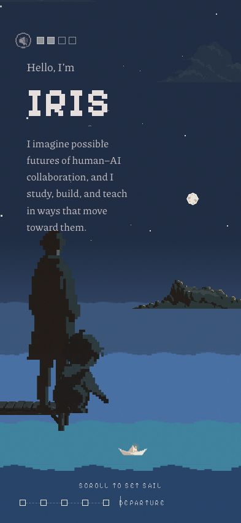 boat 47×16 · adult 88×297 · dock h 54 |
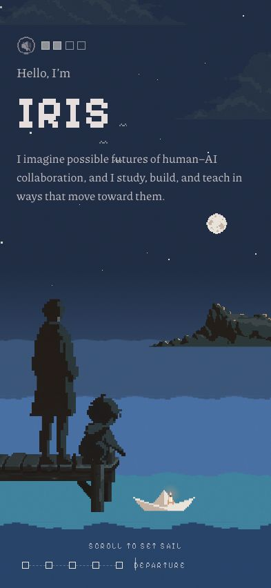 boat 90×30 · adult 71×240 · dock h 95 |
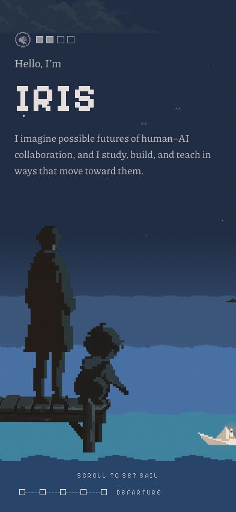 boat x 330–422 clipped · dock h 106 |
| Chapter three panel (longest) | 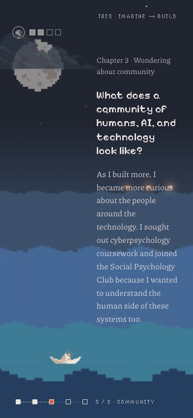 copy y 111–663 in a 165px column |
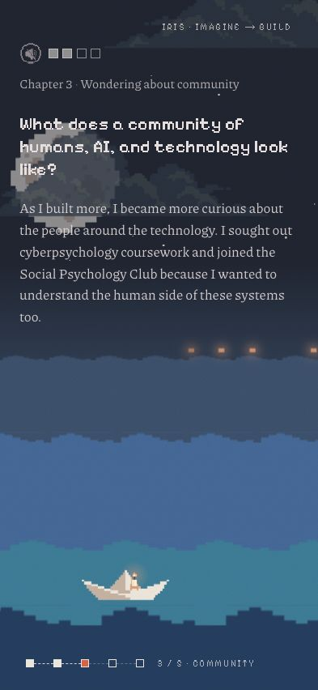 copy 92–404 · boat top 706 |
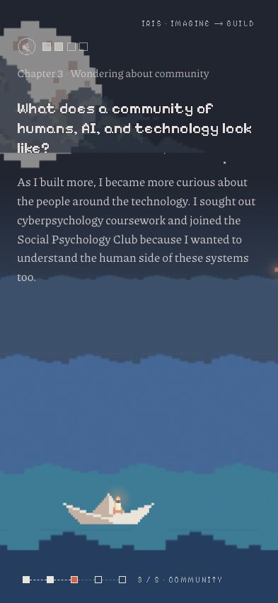 copy 92–404 · boat top 699 |
| Longest question | 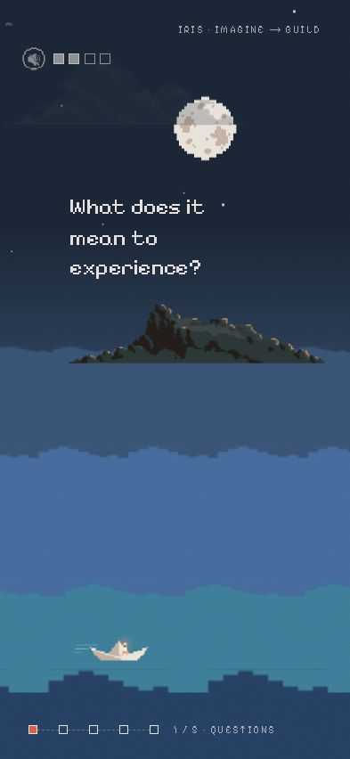 x 79–255 |
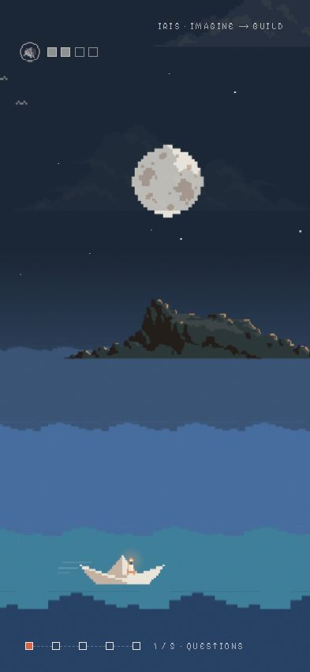 not rendered in compact |
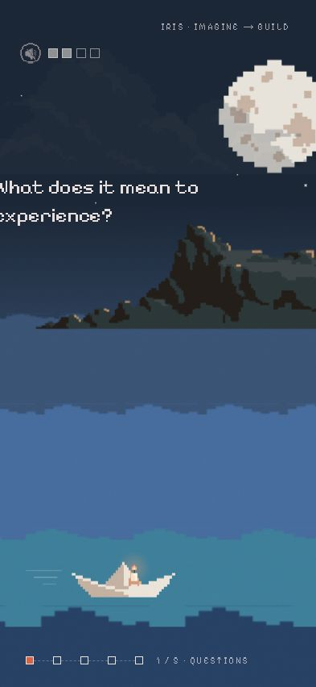 x −8–325 clipped |
| Longest project | 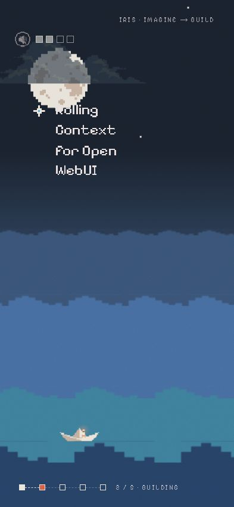 x 57–233 |
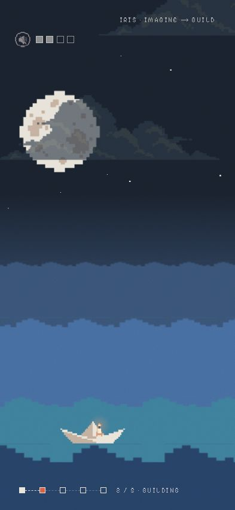 not rendered in compact |
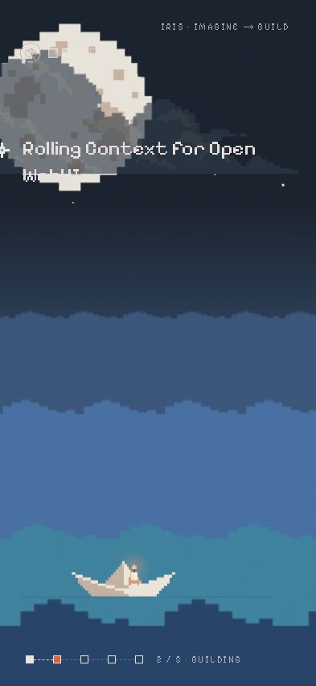 x −8–325 clipped |
| Arrival | 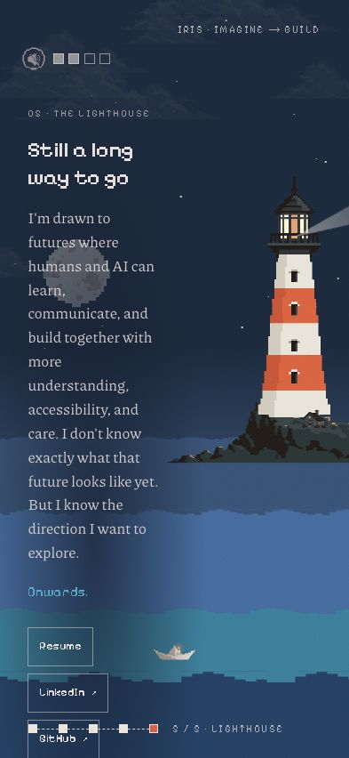 ending 119–1088 off-screen |
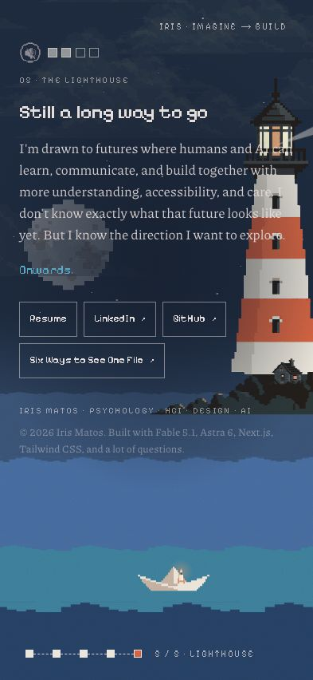 ending 92–572 · lighthouse 291–402 overlap, 9px clipped |
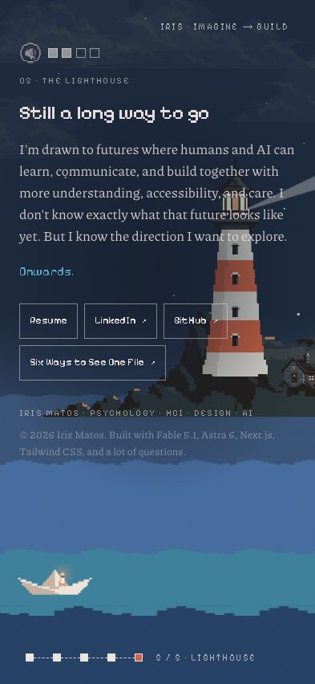 ending 92–572 · lighthouse 253–334 overlap |
| Moment | Wide, uncorrected | Compact | Crop |
|---|---|---|---|
| Departure | 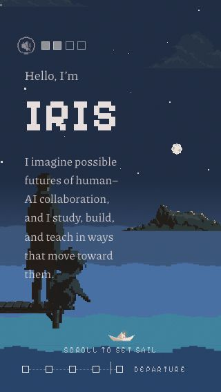 boat 38×13 · adult 59×198 |
boat 74×24 · adult 47×160 |
boat 61×20 · x 220–281 |
| Chapter two panel (moon rule) | 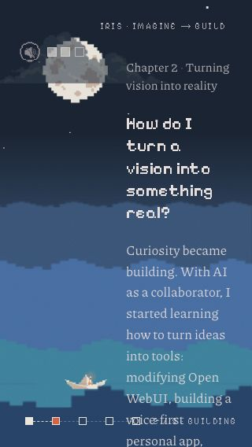 copy 74–707 off-screen |
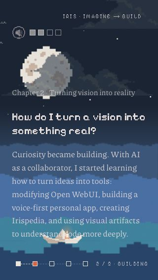 copy 176–487 · boat 465 over boat |
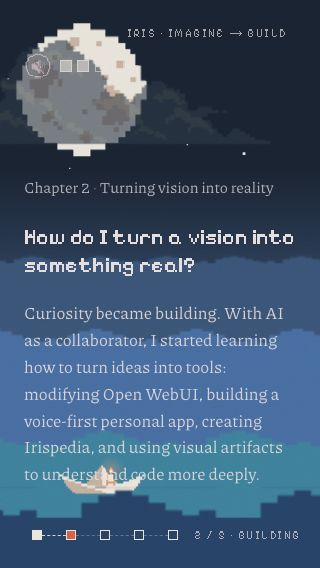 copy 176–487 · boat 466 over boat |
| Chapter three panel | 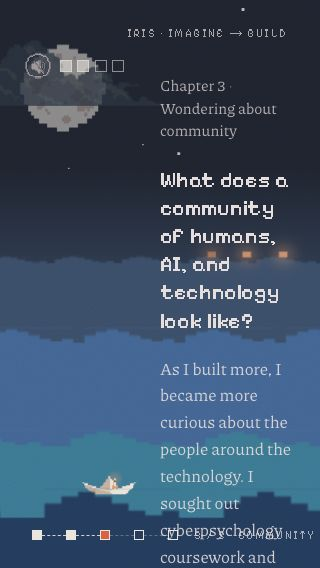 copy 74–758 off-screen |
copy 92–431 · boat 465 (34px) |
copy 92–431 · boat 466 (35px) |
| Longest question | 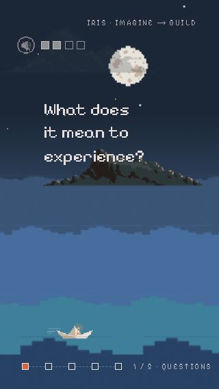 x 64–212 |
not rendered |
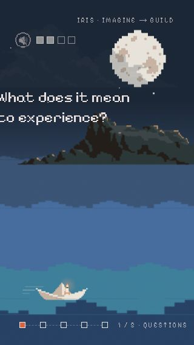 x −5–217 clipped |
| Arrival | 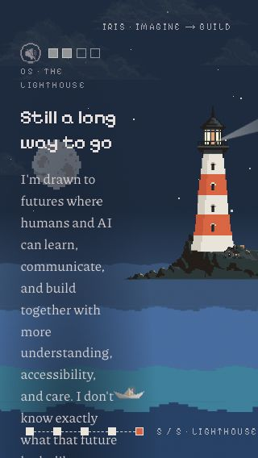 ending 80–1140 off-screen |
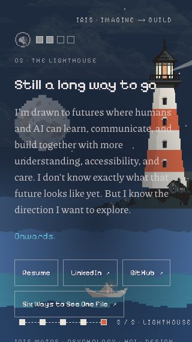 ending 92–643 off-screen · lighthouse 237–311 |
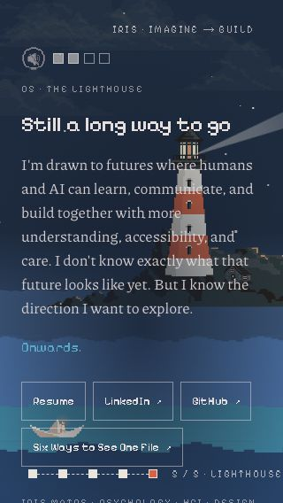 ending 92–643 off-screen · lighthouse 187–241 |
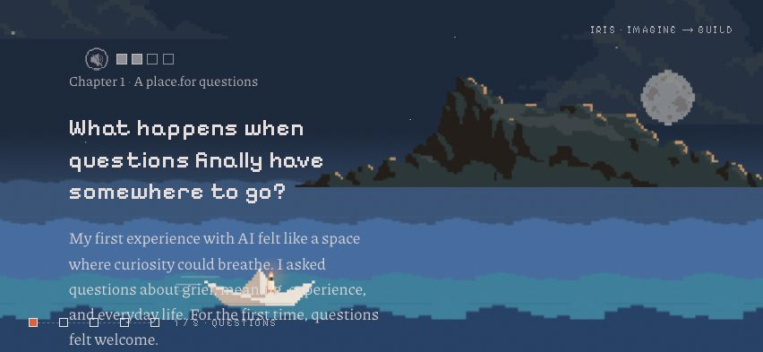
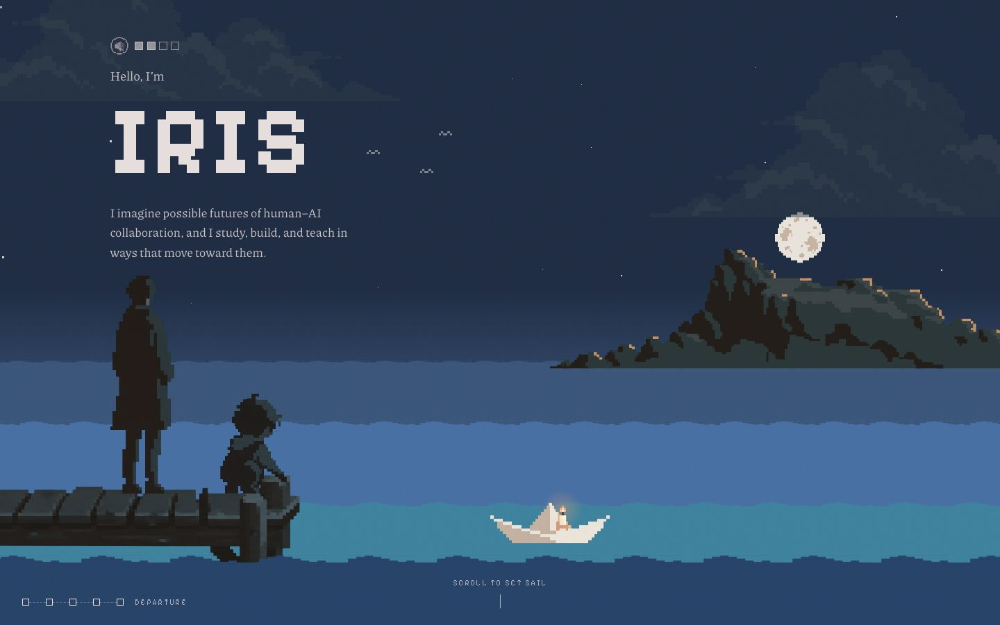
Positions were 0.05 screens apart. After each move I waited two animation frames, then measured rendered rectangles, including every transform.
| Framing · size | Boat outside frame | Examples fully visible (frames) | Example clipped | Copy over boat |
|---|---|---|---|---|
| Crop · 393×852 | 22 of 581 (s 0–1, ~27–28) | 199 | 130 (all 15 examples) | 0 |
| Crop · 320×568 | 1 (s 27.65) | 199 | 130 (all 15) | 37 (chapter two) |
| Compact · 393×852 | 0 | 0 (not rendered) | — | 0 |
| Compact · 320×568 | 0 | 0 (not rendered) | — | 37 (chapter two) |
Method: each chapter was measured at 20% through its segment, when its panel is fully typed. For each panel I recorded the rendered rectangle, the boat rectangle, and whether the typed text had reached the full body length (true for all 48 chapter measurements). The ending has no typewriter. Heights include the complete body either way, because Typed reserves the full invisible copy.
Zoom was modelled, not applied: 125% = 314×682, 150% = 262×568 and 200% = 196×426. Each is 393×852 divided by the zoom factor, assuming Safari's aA zoom shrinks the CSS viewport. That assumption is untested. Compact and crop gave identical copy geometry (within 1–6px of boat position), because they share the overlay rules. The table shows compact.
| CSS viewport | Ch 1 | Ch 2 (31% top) | Ch 3 (longest) | Ch 4 | Ending (with links) |
|---|---|---|---|---|---|
| 393×852 | 257 · 359 clear | 284 · 158 clear | 312 · 302 clear | 256 · 358 | 480 · over lighthouse |
| 375×667 | 257 · 200 | 284 · 55 | 312 · 142 | 256 · 198 | 507 · 47 over boat |
| 320×568 | 312 · 63 | 311 · 22 over boat | 339 · 34 | 283 · 90 | 551 · off-screen |
| 314×682 (125%) | 312 · 163 | 311 · 43 | 362 · 111 | 283 · 190 | 572 · 94 over boat |
| 262×568 (150%) | 367 · 13 | 443 · off-screen | 499 · off-screen | 392 · 14 over boat | 709 · off-screen |
| 196×426 (200%) | 609 · off | 578 · off | 657 · off | 549 · off | 969 · off |
Each cell shows panel height in px, then clearance above the boat's top edge. These heights are in a toolbar-free viewport. In Safari with the toolbar showing, the bottom of the lvh scene is covered, so real clearance is smaller.
Unpin the copy, not the scene. If a panel's measured height exceeds its band (from the top inset to the boat's top minus 16px), render that panel as a normal block inside the tall container at its segment's scroll offset. It then scrolls past on the page, over a scrim, while the scene stays pinned behind it. That keeps one page scroll, no inner scroll area, complete copy, and the boat still moving. For the ending, always put the links and footer in normal flow after the scene on phones. This is essentially the lead's second alternative, used only where the pinned layout doesn't fit. not built
container height = 30 × 100lvh sticky scene = 100lvh
measure() top = rect.top + scrollY, height = rect.height,
lvhPx = probe(100lvh).height, width = clientWidth
progress = clamp((scrollY − top) / (height − lvhPx)) // no innerHeight
on resize if width unchanged AND |probe lvh − lvhPx| < 1 → ignore
else measure(), scrollTo(top + kept × (height − lvhPx), "instant")
also fonts.ready → measure; pageshow → measure
| State | innerHeight | clientHeight | visualViewport | svh | lvh | dvh | Resizes ignored / re-measured |
|---|---|---|---|---|---|---|---|
| Load, toolbar showing | 714 | 714 | 714 | 714 | 754 | 714 | 0 / 0 |
| After swipe, toolbar collapsed | 754 | 714 | 754 | 714 | 754 | 754 | 3 / 0 |
The page scrolled to scrollY 690 at progress 0.0316. Only innerHeight, visualViewport and dvh changed, by 40px. The old formula divided by innerHeight, so it would have changed progress mid-scroll. The new one didn't re-measure. Screenshots of the readout are in this conversation, not attached.
ResizeObserver on the container instead of relying on fonts.ready. recommendationbottom-6) sits in that strip. Pinned controls should anchor to the small viewport, for example bottom: calc(100lvh − 100svh + 1.5rem). untestedMethod: production static export; headless Chrome driven over the DevTools protocol; 393×852 mobile emulation. At each of four points (chapter 1, chapter 2 examples, storm, arrival), the page scrolled 60 steps of 12px, one per animation frame, with instant scrolling. Per frame, a MutationObserver counted style writes and distinct elements touched. A Chrome timeline trace was summed by category on the renderer process and divided by 60. I ran each point at unthrottled CPU (Apple silicon) and at 4× CPU throttle.
Two earlier runs were discarded because of harness bugs: smooth scrolling cancelled the scroll steps, and an empty observer callback swallowed the records. Headless Chrome paints and composites differently from a real GPU, and 4× throttling is not an A-series phone. Use these numbers to compare the three framings with each other, not to predict iPhone smoothness.
| Framing | CPU | Writes / frame | Elements / frame (of 281) | Scripting ms | Style ms | Layout ms | Paint ms | Composite ms | Frame interval median · p95 |
|---|---|---|---|---|---|---|---|---|---|
| Wide | 1× | 120–131 | 114–120 | 2.2–3.7 | 1.0–1.7 | ≤0.15 | 0.4–1.0 | 0.5–0.9 | 16.7 · ≤18.1 |
| Compact | 1× | 119–130 | 113–119 | 2.6–3.1 | 1.1–1.4 | ≤0.13 | 0.4–0.7 | 0.7–0.8 | 16.7 · ≤17.6 |
| Crop | 1× | 120–132 | 114–121 | 2.2–2.4 | 0.9–1.0 | ≤0.10 | 0.5–0.9 | 0.5–0.6 | 16.7 · ≤17.7 |
| Wide | 4× | 120–131 | 114–120 | 12.5–20.0 | 5.3–9.0 | ≤0.7 | 2.1–3.9 | 3.0–5.0 | 20.3–29.3 · ≤47 |
| Compact | 4× | 119–130 | 113–119 | 13.5–16.1 | 5.7–7.1 | ≤0.6 | 2.1–3.9 | 3.5–4.1 | 21.5–25.2 · ≤31 |
| Crop | 4× | 120–132 | 114–121 | 11.8–16.4 | 4.9–6.9 | ≤0.6 | 2.4–5.7 | 3.0–4.2 | 18.3–26.2 · ≤33 |
Stage from React state on every scroll frame. At 4× throttle all three miss 60fps, and scripting plus style recalculation account for most of the frame.opacity: s.starOpacity (Stage.tsx:188). Only a before/after count on a patched build would confirm it.Measured from Chrome's accessibility tree at page load:
| Build · width | Headings reachable | Milestones and questions | Links |
|---|---|---|---|
| Current · 393 (stacked layout shown) | IRIS, 4 chapter questions, ending | 10 milestone list items, questions as text | Resume, LinkedIn, GitHub, Six Ways (×2) |
| Current · 1440 (desktop Journey) | IRIS only | none | none |
| Prototype · 393 | IRIS only | none | none |
Two things hide the content. Stage is aria-hidden, which covers every floating example. panelStyle also sets visibility: hidden on each chapter and the ending until their scroll moment, and that removes them from the accessibility tree. Desktop has this problem today; phones don't, only because of JourneyStacked.
<article> before the sticky scene, built from the existing Panels: intro, then for each chapter its heading and body followed by its questions (QuestionPanel) or milestones (ChapterPanel showItems), then the ending. DOM order is the reading order: context before examples, exactly as JourneyStacked has it now.aria-hidden, keep Stage hidden, and give headings a single ID set.:focus-visible so a sighted keyboard user never tabs into something invisible.Compact camera, full-screen, plus the changes the evidence says either camera needs. No crop track, no crop.ts.
| File | Change |
|---|---|
| app/page.tsx | Render Journey only. |
| app/layout.tsx | export const viewport = { viewportFit: "cover" }. The type exists in Next's bundled types (extra-types.d.ts:52). |
| journey/Journey.tsx | The tested lvh measurement, with a ResizeObserver added. Portrait overlay rules, including a chapter-two top that falls back to 92px when the copy won't fit below the moon. Controls anchored to svh. The unpinned-copy fallback. Framing chosen by CSS media query before first paint. |
| journey/Stage.tsx | Render examples in compact with a phone slot. Put star opacity on the layer. Compact lighthouse sized so it isn't clipped at 393 (currently 9px over). |
| journey/Panels.tsx | Split the ending links from the pinned panel. Add the transcript composition. |
| journey/JourneyStacked.tsx | Delete once the transcript passes VoiceOver. |
| tests/ | Keep the sweep harness as a script and run it as the gate: boat in frame, examples not clipped, copy not over the boat, at 393×852 and 320×568, forward, backward and jumps. |
To reproduce: git archive e267916 into two directories, run pnpm install --offline in each, apply the patch to one, run next build in both, serve each out/ on 4401 (base) and 4402 (prototype), then PORT=9401 node harness.mjs sweep.